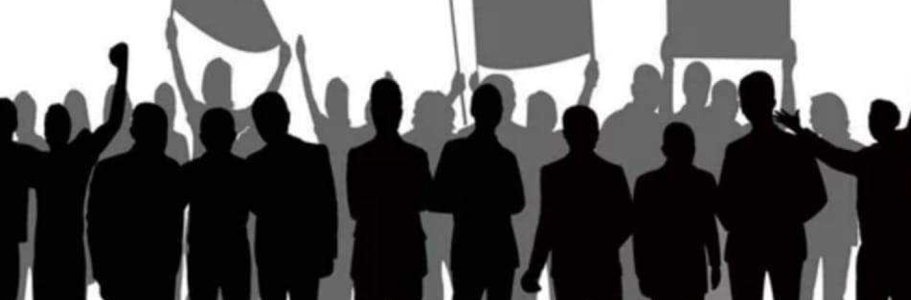

ПРОГРАМ
- Промена Система, Хапшење свих политичара од 90 тих до данас, оних који су радили против
државе и интереса грађана Србије.Они који су опљачкали и уништили државу Србију и њене
грађане. Осудити исте на доживотне робије за пример и одузети им сву имовину као и ближој
родбини и пријатељима који су учествовали у разним махинацијама , пословима подржавајући
издајнике лопове на власти и отварали компаније, куповали исте са њиховим новцем јер исти нису
имали тај новац да било шта купе јер нису ни могли да га зараде на поштен начин! Држава Србија
ће бити пример осталим државама како се то ради и како се уређује један систем и како се подиже
једна држава и највећи народ који постоји, а то су Срби!
- Породица је стуб друштва. Радићемо на томе да се 15.мај обележава у свим
градовима и општинама као дан породице.
- Поништење свих потписаних докумената који су у супротности са Уставом Републике Србије, а
пре свега докумената који су везани за Косово и Метохију (Бриселски и Вашинтонски споразум),
повратак на основне принципе међународног права, Резолуцију 1244 Савета Безбедности
Уједињених Нација и Устав Републике Србије. Косово и Метохија у целини су неотуђиви део
државе Србије. До краја спровести Резолуцију 1244, укључујући и повратак дела наших оружаних
снага, уз паралелно стварање услова за образовање покрајинских органа и организација Косова и
Метохије, као аутономне покрајине у саставу Републике Србије – области на којој би се поново
примењивао Устав.
- Укидање извршитеља!
- Укидање обавезне вакцинације деце вакцинама које нису проверене или довољно истражене.
- Укинути одузимање деце, решити случајеве несталих беба и ухапсити све људе који предводе и
учествују трговином деце.
- Подизање Србије Економски програм: Дати сваком пунолетном лицу кредит са минималном
отплатом кредита, тако што ће сваки грађанин који нема посао доћи и пријавити се на биро рада,
изразити жељу шта би радио и уложио новац у тај посао који воли да ради. На тај начин би
покренули грађане Србије и подстакли повећање наталитета. Наравно биће основана комисија
која ће надгледати, контролисати да ли је новац усмерен на прави начин. Онај ко буде поштовао
правила и уђе у посао, имаће кроз пар година подстицај за проширење посла без враћања
средстава држави. Онај ко не поштује државу,друштво и систем биће кажњен.
- Реформа свих Министарства, Полиције , Правде и осталих!
- Подстицај привреде, пољопривреде, као и пласаман произведеног. На првом месту домаћи
,органски пласман, а не увозни.
- Донети закон о ратним ветеранима.
- Повећање наталитета: Жена која роди треће дете од када овај закон ступи на снагу, стећиће
право на пензију без обзира на године живота. До тада имаће право на новчану помоћ на оба
детета.
- Измена закона о правима грађана и радничка права, која су сада минимална или не постоје!
- Свака породица која се одлучи да живи на селу, а потиче из града добиће кућу имање и новац ,
са уговором да не може да прода и одстрани другом лицу никада, те да покрене посао производње у
зависности од онога шта жели да ради.
- Иселити Мигранте из Србије и населити Србе који тренутно живе у дијаспори , тако што ће
држава гарантовати за оно што пребаце и унесу у Србију, а то је стечено богаство. Законом ће бити
заштићени и моћиће сваки Србин са својом породицом истог дана да се врати у Србију и да живи
као што је живео до тог дана у било којој држави. Херметички ћемо затворити нашу државну границу и спречити илегалне миграције на нашу територију. После доласка на власт, у року од две
године, затворићемо све мигрантске центре.
- Отворити канцеларију за оштећена лица у било којој сфери не решавања проблема или
против правно хапшење осуђена лица или одузета имовина, неправда учињена над грађанима
Србије.
- Враћање војног рока у трајању од 6 месеци!
- Преиспитати све тендере у државном и јавном сектору који су окончани само с једним
понуђачем, а за убудуће утврдити обавезу да се такви тендери могу окончати само ако се
верификују три понуђача који испуњавају услове тендера.
- Бесплатно школство и бесплатно здравство!
- Заштита животне средине и очување природних ресурса и баштине. Пут ка одржаваном
развоју. Екологију подспешити садњом нових стабала по целој Србији.
- Култура,наука,образовање,залог за будућност.
- Развој спорта.
- Извршити темељиту и свестрану реформу у информативном сектору, обезеђујући свакоме
равноправан приступ свим медијима и враћајући ауторитет слободном, посебно истраживачком
новинарству. Информативни медији морају бити у служби народа и дужни су да негују и унапређују
здраву етику и врхунске моралне вредности. Забранити емитовање свих тзв. ријалити програма.
Укинути ТВ претплату и лимитирати цене свих кабловских оператера, као и цене свих телефонских
импулса.
- Стратегија за пензионере,брига о нашој садашњости. Минимална пензија 50х динара.
- Плата у Јавним Службама и Државним органима минимална 100х динара.
- Малим и средњим предузећима најпре би се помогло смањивањем пореза и доприноса
отплата пореза на репрограм уз отписивање камате.
- Смањити цену струје.
- Укинути постојећи и донети нови закон о играма на срећу, с циљем стављања под ригорозну
друштвену контролу ове делатности и смањивања броја коцкарница, које су се недопустиво
намножиле, нарочито под фирмом тзв. спортских кладионица и које, као такве, веома штетно утичу
на све бројнију категорију грађана, међу којима је и огроман број омладине..
- Србија независна држава. Сарадња са светом!
- Бесплатни курсеви за децу за језике спорт и књиге.
- Подстицај свакој породици за повратак на Косово и Метохији.
- Смањити број министарстава и народних посланика.